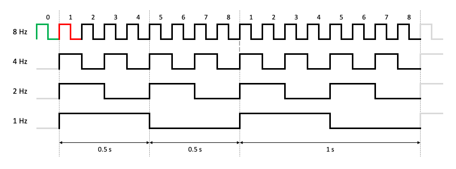
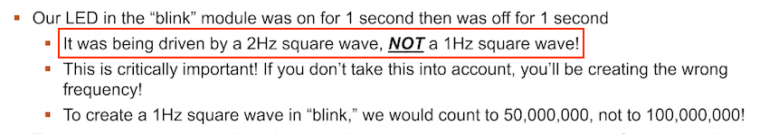
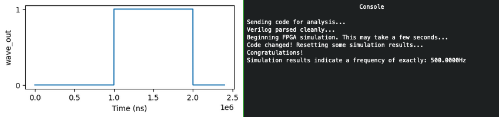
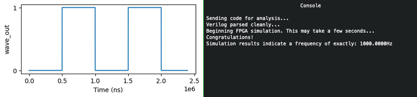
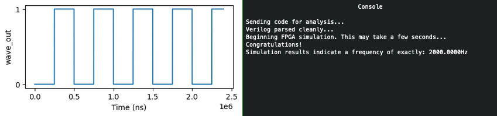
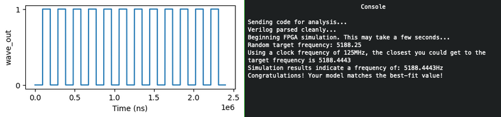
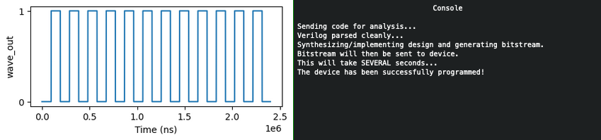

FPGA Programming⚓︎
Difficulty:
Direct link: fpga website
Terminal hint: Frostavator
Objective⚓︎
Request
Write your first FPGA program to make a doll sing. You might get some suggestions from Grody Goiterson, near Jack's elevator.
Crunchy Squishter
Greetings Earthling! I'm Crunchy Squishter.
Hey, could you help me get this device on the table working? We've cobbled it together with primitive parts we've found on your home planet.
We need an FPGA though - and someone who knows how to program them.
If you haven't talked with Grody Goiterson by the Frostavator, you might get some FPGA tips there.
Hints⚓︎
FPGA Talk
Prof. Qwerty Petabyte is giving a lesson about Field Programmable Gate Arrays (FPGAs).
FPGA for Fun
There are FPGA enthusiast sites.
Solution⚓︎
Welcome message
EE/CS 302 - Exercise #4
Hello, students! In exercise #4, we continue our FPGA journey, documenting the creation
of the sound chip for this holiday season's new Kurse 'em Out Karen doll. Our goal is to
make the doll say its trademark phrase. But, as I always tell you in class, we must walk
before we run.
Before the doll can say anything, we must first have it make noise. In this exercise you
will design an FPGA module that creates a square wave tone at a variable frequency.
Creating a square wave output takes our clock signal (which is also a square wave) and uses
a counter to divide the clock to match the desired frequency. One tricky problem that we'll
encounter is that Verilog (v1364-2005) doesn't have a built-in mechanism to round real
numbers to integers, so you'll need to devise a means to do that correctly if you want your
module to match frequencies accurately.
Good luck and always remember:
If $rtoi(real_no * 10) - ($rtoi(real_no) * 10) > 4, add 1
Interval count⚓︎
The solution follows both the blinky light example shown in Prof. Qwerty Petabyte's presentation as well as the music box example provided as a hint. The biggest difference is that our FPGA program needs to be able to generate any given output frequency. The looping and counting logic is largely the same however, except for 2 caveats.
Square waves have a 50% duty cycle
As noted by Prof. Petabyte towards the end of his presentation, a square wave should have a half or 50% duty cycle, which means the high and low state of each cycle has to be of equal duration. In other words, if we want to generate a square output wave then we will need to count the same number of rising edges on the input clock before changing from high to low as we need to count before switching back from low to high.
The main problem we need to solve is determining how many rising edges we need to count before flipping the state of the output pin (i.e., high to low, low to high). Since the output frequency can vary, we need to come up with a suitable formula to calculate the interval. The music box example provides the answer, but let's use the image below to illustrate what we need to do.

Minor mistake in Prof. Petabyte's presentation
The final slide in Prof. Petabytes's presentation contains a minor mistake. The LED in the blink module example wasn't being driven by a 2 Hz square wave. It was in fact a 0.5 Hz square wave, which the professor was kind enough to confirm. Such an awesome elf!

Let's say we want to go from a 4 Hz (i.e., 4 rising edges per second) input to a 1 Hz output (i.e., 1 rising edge per second). First, we need to wait and count 2 rising edges from the 4 Hz signal before changing the output signal from high to low. Then we need to count 2 more before going back to high. In other words, between every transition of the output signal we need to count to 2.
If instead we're trying to go from 8 Hz to 4 Hz we have to count to 1 before each transition. In more general terms, to go from X rising edges per second (or Hz) to Y rising edges per second (or Hz) we need to count to X/Y/2 before flipping the state of the output. For the first example this means 4/1/2 or count to 2. For the second example this translates to 8/4/2 or count to 1.
The program... and some caveats⚓︎
Now that we know how to calculate the interval length we can write an FPGA program that counts up to interval or an alternative version that counts down from interval, but as was noted previously there's 2 caveats. The first has to do with the interval calculation itself. To retain the highest possible precision all math should be performed with floats (lines 29-30) and the conversion to an integer should only be done on the final calculated result, using the rounding tip provided by Prof. Petabyte.
Secondly, we need to ensure that a rising edge on the rst pin doesn't take away one count from the first loop, as indicated by the red highlight in the image above. If a reset sets counter back to the same value our loop does (i.e., 1) then our first iteration will be one short by counting from 2 to interval. A reset needs to put us in the green state and change counter to 0 (line 42) in order for the first loop to also count from 1 to interval.
kurseem-out-karen-countup.verilog
1 2 3 4 5 6 7 8 9 10 11 12 13 14 15 16 17 18 19 20 21 22 23 24 25 26 27 28 29 30 31 32 33 34 35 36 37 38 39 40 41 42 43 44 45 46 47 48 49 50 51 52 53 54 55 56 57 58 | |
Running the simulations⚓︎





Answer
Write an FPGA program which can generate any requested output frequency.